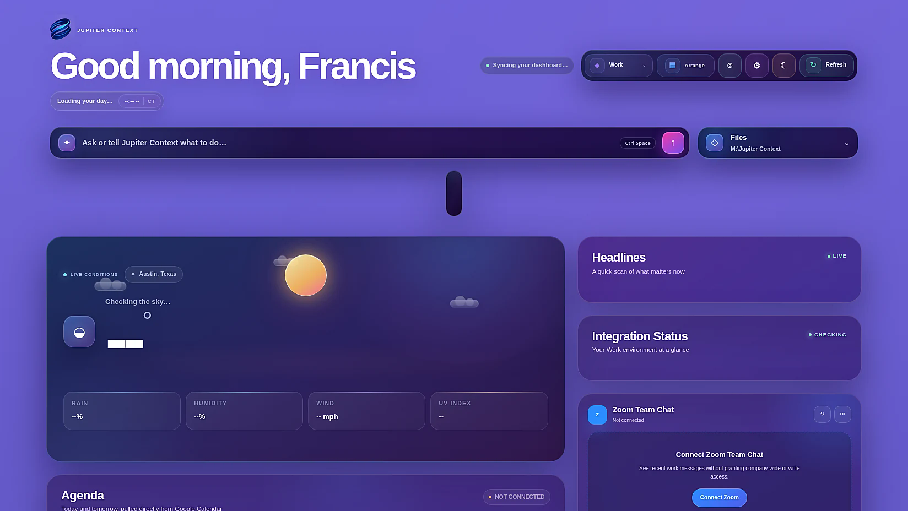
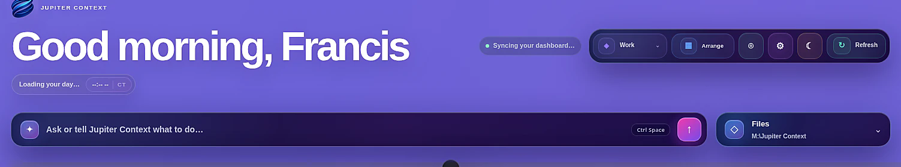
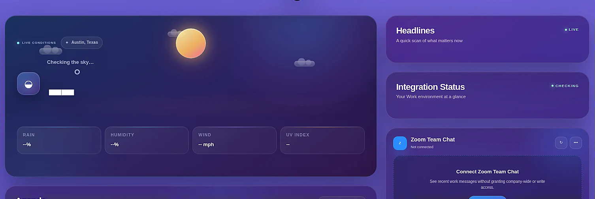
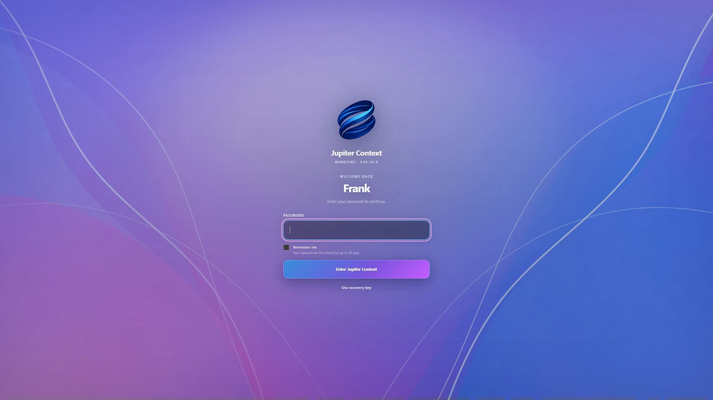

Start with intent
Ask, search, launch, and act from one Command Center instead of hunting through software first.
Jupiter Context brings your workspaces, files, meetings, media, applications, and AI into one adaptive command center built for Windows.

Traditional desktops make you translate every objective into a sequence of applications, tabs, folders, and settings. Jupiter Context keeps the familiar tools, then organizes them around the environment you are actually in.
Ask, search, launch, and act from one Command Center instead of hunting through software first.
Work, Personal, and Focus each retain their own applications, layout, Dock, appearance, and notification policy.
Jupiter Context organizes your files and information without quietly taking ownership of them.
The newest build turns the original idea into a connected Windows environment with identity, workspaces, integrations, applications, local storage, and user-controlled adaptive behavior.
Use a universal surface for questions, commands, search, and intent. Jupiter first resolves local actions and system capabilities, then hands off to AI when it adds value.

Weather, headlines, calendar, files, messages, media, and system health can live in one coherent surface. Adaptive rules remain visible, reversible, and controlled by the user.

The new sign-in experience gives Jupiter Context the presence of a complete operating environment while keeping the session local to the device.

Jupiter Context integrates the tools that already do their jobs well, then gives them a shared language, lifecycle, state, health model, and place within each workspace.
Jupiter Context is being built around a simple constraint: the system may understand more, but the user must never understand less.
Recommendations and summaries are welcome. Silent persistent changes and destructive actions are not.
Rules, routines, and changes must have a reason the user can inspect, edit, disable, or reverse.
Existing tools remain valuable. Jupiter coordinates them unless replacement creates clear, lasting value.
The core experience remains meaningful without mandatory cloud ownership of personal information.
The current pre-alpha is focused on validating the complete Jupiter Context experience before the first wider Windows release.
Invitation holders can access the current Windows preview. The broader alpha is planned for late August 2026.